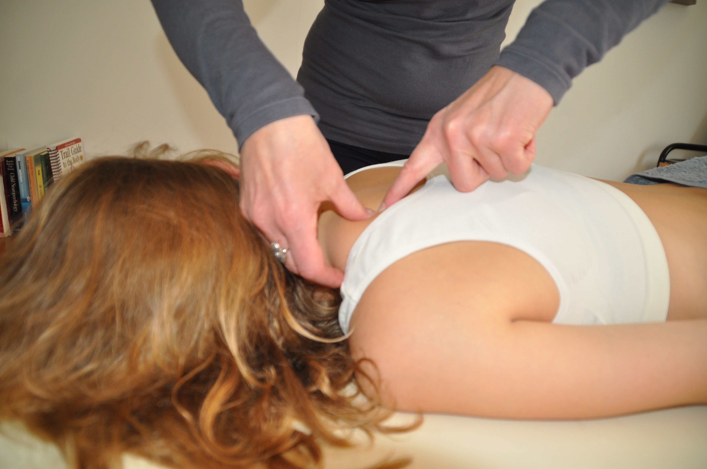

Klachten
Kinderbalans kan je helpen bij diverse klachten zoals:
- AD(H)D
- Angst
- Buikpijn
- Groeipijn
- Hoofdpijn
- Koliekpijn bij baby’s
- Nek- en schouderklachten
- Onrust
- Rugpijn
- Slaapproblemen
Als je twijfelt of ik je kind kan helpen, neem dan vrijblijvend contact met me op voor advies.
